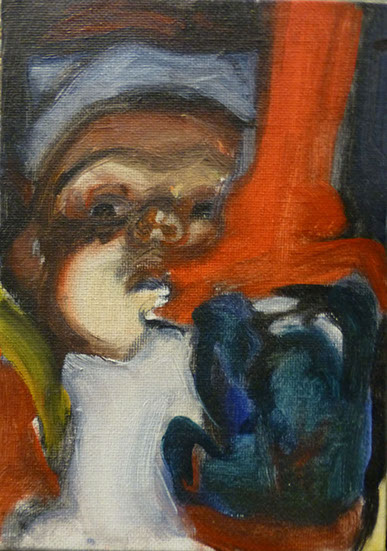
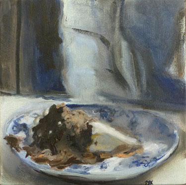
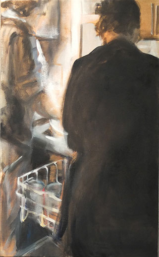
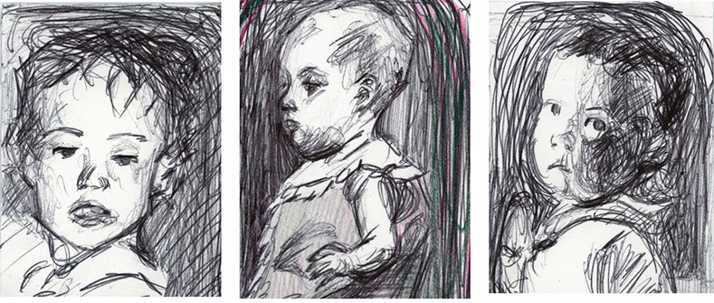
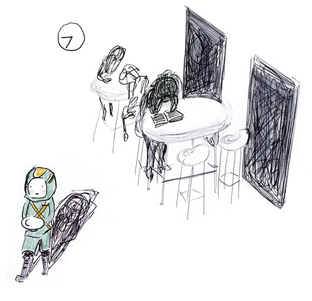
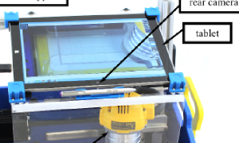
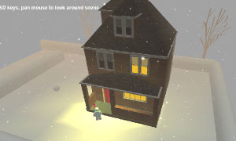
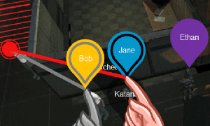
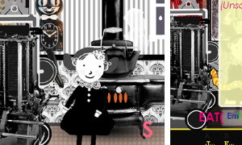

I am a 3rd year PhD student at the Human-Computer Interaction Institute (HCII) at Carnegie Mellon University. I am a part of the Natural Programming Lab, and advised by Professor Brad Myers. I did my undergrad at Wellesley College, and studied computer science and art.
I research creativity support, particularly for exploratory programming tasks. My current work is in studying creative and exploratory programming practices, and studying individuals who perform exploratory tasks with data, such as developing machine learning models or exploratory data analysis. I aim to design tools to better support exploratory programming, particularly for end-user programmers.
//background-image: a programmer for the 1940 US census. Just a reminder that the nature of what programming is and who does programming is always changing.
(Ongoing) Variolite is a tool for doing local versioning in a code editor. Variolite page
My art practice is focused on contemporary figurative painting and illustration.
(Click in to explore.)





- 2017[pdf] Mary Beth Kery and Brad A. Myers. “Exploring Exploratory Programming,” Proceedings VL/HCC'2017: Visual Languages and Human Centered Computing, Raleigh, NC, 2017. To appear.
- 2017[pdf] Florian Kistner, Mary Beth Kery, Michael Puskas, Steven Moore and Brad A. Myers. “Support for Understanding and Writing Exception Handling Code,” Proceedings VL/HCC'2017: Visual Languages and Human Centered Computing, Raleigh, NC, 2017. To appear.
- 2017 Myers, Brad A., Andrew J. Ko, Chris Scaffidi, Stephen Oney, YoungSeok Yoon, Kerry Chang, Mary Beth Kery, and Toby Jia-Jun Li. "Making End User Development More Natural." In New Perspectives in End-User Development, pp. 1-22. Springer, Cham, 2017.
- 2017[pdf] Mary Beth Kery, Amber Horvath and Brad A. Myers. “Variolite: Supporting Exploratory Programming by Data Scientists,” Proceedings CHI'2017: Human Factors in Computing Systems, Denver, CO, May 6-11, 2017.
- 2016[pdf] Mary Beth Kery, Claire Le Goues, and Brad A. Myers. "Examining programmer practices for locally handling exceptions." In Proceedings of the 13th International Workshop on Mining Software Repositories, pp. 484-487. ACM, 2016.
- 2014[pdf] Mary Beth Kery, Monica Feldman, Jonathan Livny, and Brian Tjaden. "TargetRNA2: identifying targets of small regulatory RNAs in bacteria." Nucleic acids research (2014): gku317
I've had the opportunity to be a graduate mentor some wonderful students:
Undergraduates:
- Mahima Arya (Carnegie Mellon University) worked with us on Rose Quartz and continued work on Variolite during a summer 2017 REU program at CMU
- Marissa Radensky (Amherst College)worked with us on Rose Quartz during a summer 2017 REU program at CMU
- Amber Horvath (Oregon State University)worked with us on Variolite during a summer 2016 REU program at CMU
- Michael Puskas (Arizona State University)worked with us on Moonstone during a summer 2016 REU program at CMU, and developed a large body of the code.
Masters Students:
- Florian Kistner (Technical University of Munich)Florian contributed heavily on the Moonstone tool and developed new studies on Moonstone and exception handling for his masters thesis. 2016-2017
- Steven Moore (Carnegie Mellon University)Steven worked with us, and contributed highly to early phases of the Moonstone project, including development and early qualitative studies we ran on developers. 2015-2016
These are some course projects and undergraduate research I did from 2011-2015.
|  |
TabletCNC: a mixed-reality interface and positioning for a portable CNC router, UC Berkeley, Summer 2014. Aworking augmentation of a portable CNC router where we have mounted a tablet over the router to provide a lightweight mixed-reality system. The mixed-reality interface allows for designing directly onto the work surface and also aids the user in tiling the Handibot to cut areas larger than the machine cutbed. I was responsible for designing and developing the interface and computer-vision software for this project. |
|  |
Snowbot (Wellesley College, Fall 2014) is an interactive scene were I created the models, texture, and lighting for a Computer Graphics course. |
|  |
Frosty: Intuitive Narrative Generation with Mixed-Initiative Planning, North Carolina State University, Summer 2013
A user interface designed for mixed-initiative planning between a human and AI to tell the story of a crime scene in 3D virtual space. I worked with the Liquid Narrative Research Group, as part of a REU program summer of 2013. I worked on development and design on the interface with my research partner Christian Stith.
|
|  |
Ada & Charles and the Analytical Monstrosity! (Wellesley College, Spring 2012) A game I designed and implemented for a course project. The game has simple word puzzles and follows the adventures of child versions of Ada Lovelace and Charles Babbage and their Analytical Monstrosity, which both computes and eats people!
|